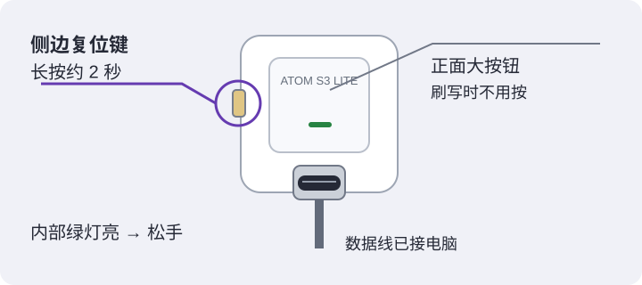
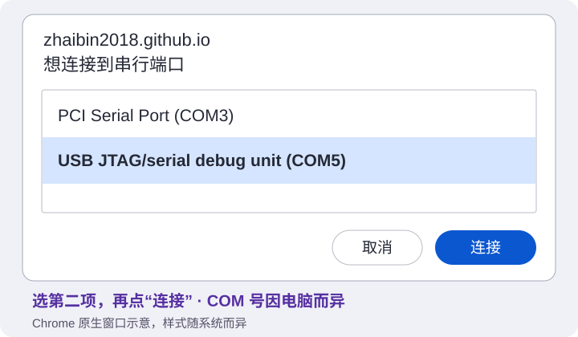
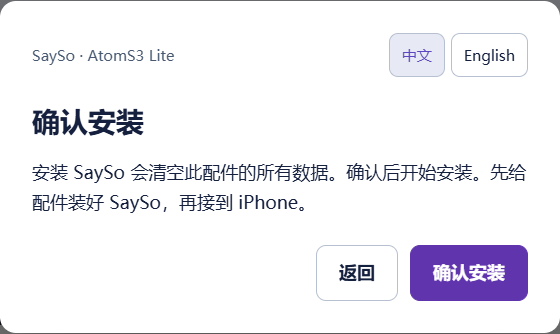
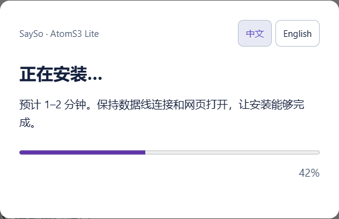
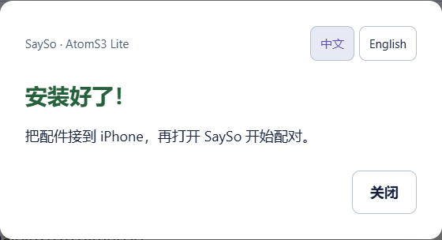

准备配件
在电脑上继续
点“复制链接，在电脑上打开”，再在电脑的 Chrome 或 Edge 中打开链接。安装工具需要能通过 USB 连接配件的浏览器。
下方是安装步骤预览。
SaySo 用的配件是另外购买的 M5Stack AtomS3 Lite。按下面三步给配件装上 SaySo，通常需要 1–2 分钟。
帮你点需要 USB-C 接口的 iPhone（iPhone 15 及以后机型）。只让 ChatGPT 看屏幕时，Lightning 接口的 iPhone 也可以。
重新安装会清空配件原来的配对。装好后，请把配件和 iPhone 重新配对。
图片看不清时，点图放大。
准备电脑和数据线
用 Windows 或 Mac 电脑上的 Chrome 或 Edge 打开本页，让浏览器能连接配件。准备一根能传文件的数据线，安装工具要通过它传送安装文件。先给配件装好 SaySo，再接到 iPhone。

认准白色方形 AtomS3 Lite，正面有大按钮，侧边有小复位键。 接上电脑，进入下载模式
- 用数据线把配件接到电脑。
- 长按侧边小复位键约 2 秒，直到内部绿灯亮起，再松手进入下载模式。
- 松手后绿灯会熄灭，这是正常的，表示已进入下载模式。保持数据线连接，第 3 步浏览器才能找到配件。

按住侧边小复位键时绿灯亮起，松手后熄灭。正面大按钮留到配对时用。 选择配件并安装
在电脑上的 Chrome 或 Edge 打开复制的链接，再点“开始安装”。
点“开始安装”打开端口选择窗口，选中刚接入的配件，再点“连接”，让安装工具访问配件。
正在核对安装文件…

串口选择示意图。名称和端口号因电脑而异。 不要选 PCI Serial Port，那是电脑内置的端口，不是配件。请找 USB JTAG/serial debug unit。如果没看到，先取消，换一根数据线或换一个 USB 口，再重做第 2 步，让电脑找到配件。

确认后开始安装。安装 SaySo 会清空此配件的所有数据。 
安装和核对通常需要 1–2 分钟。保持数据线连接和网页打开，让安装能够完成。 
显示“安装好了！”，表示配件可以配对了。 示意图，你电脑上的样子可能略有不同。
和 iPhone 配对
拔下配件，接到已解锁的 USB‑C iPhone 上并打开 SaySo，让它发现配件。
看到“发现 SaySo 配件”后，点“开始配对”。等灯闪烁再按一下配件正面按钮，确认你要配对的是手上的配件。SaySo 会显示配对结果。

如果 SaySo 提示“配件已和另一台 iPhone 配对”，请把配件插到原来的 iPhone 上。在 SaySo 打开“设置 → SaySo 配件”，点“移除配件”。
如果用不了原手机，请按本页安装步骤重置配件，再重新配对。
如果 iPhone 提示“配件已经重置，要重新配对吗？”，请点“重新配对”。
按“开始使用”里的辅助触控步骤设置，配件才能点按屏幕。
找不到配件，或一直在准备中？
换一根数据线或换一个 USB 口再试，然后按第 2 步重新进入下载模式。
关闭可能占用串口的程序（例如 Arduino IDE），再重做第 2 步。